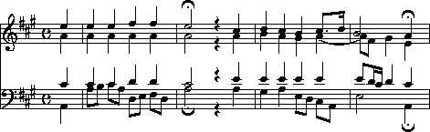

**kern representation is given below
the notation.
Example 2.1. J.S. Bach Die Kunst der Fuge

**kern*clefG2*k[b-]*M2/2=-2d/2a/=2f/2d/=2c#/4d/4e/=2f/2r*-

**kern representation can be used to represent basic
or core information for common Western music.
The **kern scheme can be used to encode pitch and duration,
plus other common score-related information.
In this chapter, we will introduce **kern
through a series of tutorial examples.
A more comprehensive description
of **kern will be given in
Chapter 6.
Our intention here is to provide a quick introduction.
Consider the opening motive from J.S. Bach's Art of Fugue
shown in Example 2.1.
A corresponding **kern representation is given below
the notation.
Example 2.1. J.S. Bach Die Kunst der Fuge
**kern*clefG2*k[b-]*M2/2=-2d/2a/=2f/2d/=2c#/4d/4e/=2f/2r*-
**kern is intended to represent the underlying
functional
information conveyed by a musical score rather than the visual or
orthographic
information found in a given printed rendition.
The **kern representation is designed to
facilitate analytic applications rather than music printing or sound
generation.
Nevertheless, both visual output and sound output can be generated from the
**kern representation.
Notice that whereas the notation is laid out horizontally across
the page, the Humdrum representation procedes vertically down the page.
The representation begins with the keyword **kern which indicates
that the ensuing encoded material conforms to the kern representation.
The encoded passage ends with a special
terminator
token (*-).
The clef is identified as a G-clef positioned on the second line of the staff (i.e., a treble clef). The key signature is encoded as a single flat, B-flat: the minus sign here indicates a flat. The meter signature (2/2) is encoded next.
Lines that begin with an equals-sign indicate
logical
barlines.
Musical works may begin with either a complete measure or
a partial measure.
In the **kern representation, the beginning of the
first measure is explicitly indicated.
In Example 2.1, the encoding for the first barline (=-)
is a functional encoding that doesn't correspond to anything
in the printed score.
The minus sign following the equals-sign indicates that the barline
is "invisible."
The presence of this logical barline allows various Humdrum tools
to recognize that the initial notes start at the beginning of
the first measure, and are not "pick-up" notes prior to the
first measure.
The durations of the notes are indicated by reciprocal numbers: 1 for whole-note, 2 for half-note, 4 for quarter-note, etc. The breve or double whole-note is a special case and is represented by the number zero.
Stem directions are encoded using the slash (/) for up-stems and the back-slash (\) for down-stems.
Pitches are represented through a scheme of upper- and lower-case letters.
Middle C (C4) is represented using the single lower-case letter "c".
Successive octaves are designated by letter repetition, thus C5 is
represented by "cc", C6 by "ccc" and so on.
The higher the octave, the more repeated letters.
For pitches below C4, upper-case letters are used: "C" designates C3,
"CC" designates C2, and so on.
Changes of octave occur between B and C.
Thus the B below middle C is represented as "B";
the B below "CC" is represented as "BBB", and so on.
The lower the octave, the greater the number of repeated letters.
Accidentals are encoded using the octothorpe (#) for sharps, the minus
sign (-) for flats, and the lower-case letter "n" for naturals.
Accidentals are encoded immediately following the pitch letter name.
Double-sharps and double-flats have no special representations in **kern
and are simply denoted by repetition:
(##) and (--) respectively.
Triple and quadruple accidentals are similarly encoded by repetition.
Sharps, flats, and naturals are mutually exclusive in **kern,
so tokens such as "cc#n" and "GG-#" are illegal.
In Example 2.2, two musical parts are encoded.
In the corresponding **kern encoding, each musical part or
voice has been assigned to a different musical staff --
labelled *staff1 and *staff2.
Notice that the upper part has been encoded in the right-most column.
The layout is exactly as though the musical score were turned sideways.
Example 2.2. J.S. Bach, Praeambulum BWV 390.
Each column contains its own separate information.
Both columns have been labelled 
**kern**kern *staff2*staff1 *clefF4*clefG2 *k[b-]*k[b-] *M3/4*M3/4 =1-=1- 2.r8r .8d/L .8g/ .8b-/ .8g/ .8d/J =2=2 8r4dd\ 8GG/L. 8BB-/4r 8D/. 8BB-/4r 8GG/J. =3=3 4GWw\8r .8dd\L 8GG/L8b-\ 8BB-/8g\ 8D/8gg\ 8G/J8b-\J =4=4 4D\8a/L .8gg/ 4d\8ff/ .8ee/ 4D\8ff/ .8a-/J =5=5 *-*- **kern and are terminated (*-).
The columns are separated by a single tab.
Barline information is also encoded in each column.
Notice that measure numbers have been added following the barline
indicator (=).
Although measure numbers may not be present in the printed score,
it is normal to include them in **kern encodings.
A notable feature when representing multi-part music is the presence of place holders called null tokens. A null token is represented by a single isolated period character (.). Not all musical parts will have a new note with each successive sonority. A null token maintains the grid structure for a sustained pitch while another part is moving.
Rests are encoded by the lower-case letter `r'.
Notice that the first rest in the lower part has not been encoded
as a whole rest.
Instead, it has been rendered as a dotted half rest.
This is a good illustration of how **kern is intended
to be a
functional
rather than
orthographic
(visual) representation.
Another important difference between functional and orthographic
representations is evident in the treatment of accidentals.
In the **kern representation, all pitches are encoded
without regard for what is going on around them.
For example, in **kern, pitches are encoded
with the appropriate accidental,
even if the accidental is specified in a key-signature or is present earlier
in the same measure.
Hence the explicit encoding of all occurrences of B-flats in Example 2.2.
All pitches are encoded as absolute pitches.
In **kern, even transposing instruments are always represented
at (sounding) concert pitch.
A special
transposition interpretation
is provided to indicate the nature of any transposing instrument
-- but the encoded pitches -- selves appear only at concert pitch.
Finally, pitches in **kern are encoded as "nominally"
equally-tempered values.
A special
temperament interpretation
is provided to indicate if the tuning
system is other than equal temperament.
Two other aspects of Example 2.2 are noteworthy.
In measure 3 an inverted mordent appears on the first note in the
bass part.
Mordents are encoded via the letter `M' -- upper-case `M' for
whole-tone mordents and lower-case `m' for semitone mordents.
Inverted mordents are similarly encoded using the letter `W'.
In Example 2.2, it is not clear whether the mordent should be
a semitone (consistent with a G harmonic minor figure) or
a whole-tone mordent (consistent with a G melodic minor figure).
The signifier `Ww' is a special representation indicating that
the ornament may be either one.
Also evident in Example 2.2 are the upper-case letters `L' and `J'.
These encode beaming information.
Each beam is opened by the letter `L' and closed by the letter `J'
(think of left and right angles).
Multiple beams and partial beams are discussed in Example 2.4.
Example 2.3 shows a four-part chorale harmonization by Bach.
In this example, two musical parts share each of the two staves.
Notice how the corresponding **kern encoding
assigns each part to a separate column, but links the
appropriate parts using the *staff indicators.
Example 2.3. Nun danket alle Gott, arr. J.S. Bach.

Once again, clefs, key signatures and meter signatures are
encoded separately for each part.
Notice how the meter signature has been encoded as 4/4 rather
than `common time'.
This again reflects
**kern**kern **kern **kern *staff2*staff2 *staff1 *staff1 *clefF4*clefF4 *clefG2 *clefG2 *k[f#c#g#]*k[f#c#g#] *k[f#c#g#] *k[f#c#g#] *M4/4*M4/4 *M4/4 *M4/4 4AA4c# 4a 4ee =1=1 =1 =1 8A4c# 4a 4ee 8B. . . 8c#4c# 4a 4ee 8A. . . 8D4d 4a 4ff# 8E. . . 8F#4d 4a 4ff# 8D. . . =2=2 =2 =2 2A;2c#; 2a; 2ee; 4r4r 4r 4r 4A4e 4a 4cc# =3=3 =3 =3 4G#4e 4b 4dd 4A4e 4a 4cc# 8E4e 4g# 4b 8D. . . 8C#4e [4a 8.cc# 8AA. . . .. . 16dd =4=4 =4 =4 2E8e 8a] 2b .16d 8f# . .16c# . . .4d 4g# . 4AA;4c#; 4e; 4a; =:|!=:|! =:|! =:|! *-*- *- *- **kern's preoccupation with
functional information rather than orthographic information.
(Later we will see how to encode the fact that the meter signature
is visually rendered as `C' rather than 4/4.)
In measure 2, pauses (;) have been encoded for all four voices
even though only two pause symbols appear in the printed notation.
In the third measure, the last note of the alto part has been
tied into the fourth measure.
The **kern representation provides no generic means for representing
"curved lines" found in printed scores.
Since **kern is a "functional" rather
than an "orthographic" representation, all lines are explicitly
interpreted as either
ties, slurs
or
phrases.
The open brace { denotes the beginning of a phrase.
The closed brace } denotes the end of a phrase.
The open parenthesis ( and closed parenthesis ) signify
the beginning and end of a slur respectively.
The open square bracket [ denotes the first note of a tie.
The closed square bracket ] denotes the last note of a tie.
The underscore character _ denotes middle notes (if any) of a tie.
Slurs and phrase markings can be
nested
(e.g. slurs within slurs)
and may also be
elided
(e.g. overlapping phrases) to a single depth.
Nested markings
mean that one slur or phrase is entirely subsumed under
another slur or phrase.
For example: ( ( ) ) means that a short
slur has occurred within a longer slur.
Elisions
are overlaps, for example, where an existing phrase fails to
end while a new phrase begins.
In **kern the ampersand character (&) is used
to mark elided slurs or phrases.
For example: { &{ } &} means
that two phrases overlap -- the first phrase ending after
the second phrase has begun.
Example 2.3 ends with a repeat sign.
The **kern representation makes a distinction between
repeat signs that appear in the score and repeat signs
that are obeyed in performance.
In this example, only the visual or orthographic rendering of the
barline has been encoded.
Later, in
Chapter 20,
we will see how sectional repeats are
functionally represented.
The visual appearance of the final barline is encoded as follows: =:|!.
The equals-sign indicates the logical presence of a barline.
The colon indicates the repeat sign, followed by a thin line (|),
followed by a thick line (!).
Example 2.4 shows a keyboard work by Franz Joseph Haydn. In this example, the lower staff appears to have two concurrent voices. The excerpt has been encoded using three spines, two of which encode material appearing on the same staff. Notice that key signatures are provided that explicitly indicate that there are no sharps or flats in the key signature.
The upper-most part in the first measure shows the use of
partial beams.
Partial beams that extend to the left are encoded by the lower-case
letter `k'.
Partial beams that extend to the right are encoded by the upper-case `K'.
Letters are repeated for each partial beam present.
In this case, only a single partial beam is used, so only a single `k'
is encoded.
Notice that the signifiers `L' and `J' are used only
to encode complete beams.
In the second-last measure, double beams are used to join the
sixteenth-note pairs.
As a result, the beams are started with `LL' and end with `JJ'.
Example 2.4. Franz Joseph Haydn, Sonata in C major, Hob. XVI: 35.
Slurs are evident in the third measure.
Open and closed slurs are represented by open (
**kern**kern **kern *staff2*staff2 *staff1 *clefG2*clefG2 *clefG2 *k[]*k[] *k[] *M3/4*M3/4 *M3/4 =1-=1- =1- 4r4r [4ee\ 4c/4g/ 8.ee]\L .. 16ff\Jk 4f/4g 8.dd\L .. 16ee\Jk =2=2 =2 4e/4g/ 4cc\ 4r4r 4gg/ 4r4r 4gg/ =3=3 =3 (2B\([2.g/ (8gg\L .. 8ff)\J .. (8ff\L .. 8ee)\J 4c\. (8ee\L .. 8dd)\J =4=4 =4 4G\)4g])/ 4dd\ 4r4r 4b\ 4r4r 4g/ =5=5 =5 4r4r [4ee\ 4c/4g/ 8.ee]\L .. 16ff\Jk 4f/4g/ 8.dd\L .. 16ee\Jk =6=6 =6 4e/4g/ 4cc\ 4r4r 4ccc\ 4E\4c\ 4ccc\ =7=7 =7 4f\4c\ 16gg#\LL .. 16aa\JJ .. 8r 4r4r 16ee\LL .. 16ff\JJ .. 8r 4Gn\4f\ 16dd\LL .. 16b\JJ .. 8r =8=8 =8 4c\4e\ 4cc\ 4r4r 4r 4r4r 4r =:|!=:|! =:|! *-*- *- ()
and closed ()) parentheses respectively.
Notice that the middle part in the third measure
contains a tied note.
Considering the presence of concurrent slurs in the other parts
it is possible that an appropriate interpretation of the score
would regard the middle voice as also slurred.
Notice that in the **kern representation,
notes can be tied, slurred, and phrased concurrently.
In any representation, some information may best be conveyed as an appended commentary, rather than as part of the encoded data. Humdrum comments are records (lines) that begin with an exclamation mark.
Humdrum distinguishes two basic types of comments.
Comments that pertain to all spines in a file are referred to as
global comments
and begin with two exclamation marks (!!).
Comments that pertain to a single spine are called
local comments
and begin with a single exclamation mark in each spine.
Both types of comments are evident in Example 2.5.
The first three records are global comments identifying the source and title of the piece. The fifth record encodes a local comment in each column. One local comment identifies that the lyrics are in the Ojibway language. On the same line, notice that the other spine also encodes single exclamation mark, but contain no text. Such isolated exclamation marks are referred to as null local comments.
Notice that
local comments
conform to the prevailing spine structure.
Each spine begins with an exclamation mark and tabs
continue to demarcate each spine.
Global comments
by contrast completely ignore the spines.
Example 2.5. Ojibway Song.
!! Ojibway Indian Song!! Transcribed by Frances Densmore!! No. 84 "The Sioux Follow Me"
**kern**lyrics !! In Ojibway *clefF4* *M3/4* *k[b-e-a-d-g-]* 8.d-Ma- 16d--gi- =1=1 8d--ja- 16A--go 16A-ic- 4d--kew- 4d--yan =2=2 etc.etc. *-*-
A particularly important type of global comment is the reference record. Reference records are formal ways of encoding "library-type" information pertaining to a Humdrum document. Reference records provide standardized ways of encoding bibliographic information -- suitable for computer-based access.
Humdrum reference records are designated by three exclamation marks at the beginning of a line, followed by a letter code, followed by an optional number, followed by a colon, followed by some text. The following example provides a set of reference records related to the "Augurs of Spring" section from Stravinsky's Rite of Spring. Example 2.6.
Reference records need not be in any particular order. The most important reference records (composer, title, etc.) are typically placed at the very beginning of a file since this makes inspecting the file easier. Less important reference records are typically placed at the end of the file.
!!!COM: Stravinsky, Igor Fyodorovich!!!CDT: 1882/6/17/-1971/4/6!!!ODT: 1911//-1913//; 1947//!!!OPT@@RUS: Vesna svyashchennaya!!!OPT@FRE: Le sacre du printemps!!!OPT@ENG: Rite of Spring!!!OTL@FRE: Les augures printaniers!!!PUB: Boosey & Hawkes!!!YEC: 1945 Boosey & Hawkes!!!AGN: ballet!!!AST: neo-classical!!!AMT: irregular!!!AIN: clars corno fagot flt oboe
Reference codes that begin with the letter `C' pertain to
the composer.
The `COM' code identifies the composer (surname first followed by given
names).
The `CDT' code identifies the composer's birth and death dates.
A special format is used in defining such dates,
and so there are accurate ways to represent uncertainty,
approximation, ranges of dates, and alternative dates.
The Humdrum Reference Manual describes date formats in great detail.
Reference codes that begin with the letter `O' pertain to
the work or opus.
The `OTL' code identifies the title of the encoded material --
in this case the `Les augures printaniers'.
The `OPT' code identifies the `parent' work from which the encoded
music belongs.
The `ODE' code identifies the name of a person or organization
to which the work was dedicated.
All three of these records (OTL, OPT and ODE)
are encoded using the original language.
Language designations are explicitly indicated by following a reference code
with one or two "at" signs (@) followed by a three letter language code.
The `OPT@ENG' code is used to provide an English translation.
In this case, the Russian title (Vesna svyashchennaya) is translated
as Rite of Spring.
The double "at" sign (@@) is used to designate the original, primary,
or preferred language.
Reference codes beginning with `P' pertain to publishing and
imprint information.
(Codes beginning with `S' can be used to identify manuscript
sources, library or archive locations, and other source-related
data.)
Codes beginning with `Y' identify copyright information.
Humdrum defines separate codes for publisher of the electronic edition,
publisher of the original source document, date of copyright,
date of data release, country of copyright, copyright message,
original copyright owner, original year of publication, and other
information.
The `YEC' reference record shown in Example 2.6 simply encodes
the date and copyright owner of the electronic document.
Codes that begin with `A' identify analytic information concerning
the document.
The code `AMT' provides a metric classification.
Meters may be classified using combinations of the following keywords:
simple, compound, duple, triple, quadruple, irregular.
The `AGN' code is used to provide a free-form text that helps to
identify the genre of the work.
In this case the genre is identified as ballet.
Other suitable characterizations may include opera,
string quartet, concerto, barbershop quartet, folksong, and so on.
The `AST' code can be used to identify the style or period of work.
Once again, this is a free-form text record.
Suitable keywords might include terms such as baroque, bebop, bossa nova,
Ecole Notre Dame, minimalist, high-life, hip-hop, reggae, etc.
Such analytic information is obviously interpretive and often open
to disagreement.
Nevertheless, explicit analytic information often proves useful
in electronic documents.
An especially useful analytic reference record is the `AIN' record
for encoding instrumentation.
This reference record follows a strict syntax.
Each instrument has an official Humdrum abbrevation.
Appendix II
identifies a number of the more common instrument codes.
Instrumentation reference records always specify the instrumentation
in alphabetical order by instrument abbrevation separated by a single
space.
For example, the instrumentation for a woodwind quintet is given as:
!!!AIN: clars corno fagot flt oboe
In our discussion here we have only identified some of the more common types of reference records. A complete description of reference records is given in Appendix II.
In this chapter we have introduced the Humdrum **kern
representation and a few of the more important reference records.
As we have seen, **kern can be used to encode core
information for common musical scores;
**kern is used to represent
functional
information rather than
orthographic
(visual) information.
In
Chapter 6
an expanded description of **kern will be given
that includes a much wider variety of concepts and situations
than we have encountered in this chapter.
Appendices I
and
II
provide expanded information
pertaining to Reference Records.
Although we have only demonstrated the encoding of fairly simple information, we can already begin processing such data in musically useful ways. In the next chapter we will examine some simple processes.